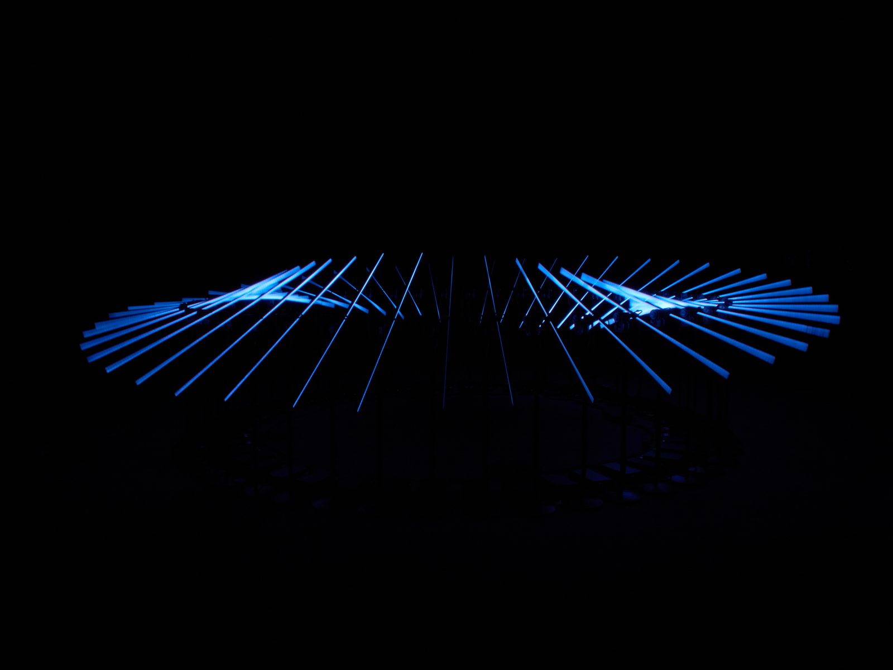

Meridian Breath
Galleria Kipinä, Helsinki — autumn 2024 · Sold to a private collection after the run

Galleria Kipinä's autumn show was built around slowness — one room, one work, eleven weeks. The gallery asked for a piece that would read as a single held breath across a 9-metre wall, in a colour that was "the colour of deep water at noon, not at night." No blue paint, no LED: real discharge, or nothing.
Deep-water blue-white is xenon's own colour, so the recipe wrote itself — xenon in clear 12 mm glass, 26 m in five circuits. The drawing follows the meridians of a nautical chart of the Gulf of Finland. The long runs were bent by the artist; the tight returns, where the line folds back on itself every 40 cm, went to master bender R. Aho — his hands are steadier at that radius, and the plate says so. Two 30 mA transformers, 234 W at the wall, burned in 60 hours before crating.
Eleven weeks, roughly 9,000 visitors, zero interventions — the gallery never opened the work's cabinet once. The gallery's own count put average dwell time in the room at just over four minutes, against forty seconds for the show's other rooms. Sold on the final weekend. The buyer received the recipe plate, the burn-in log, and the maintenance schedule with the crate.
| Gas | Xenon; krypton trace in the two shortest runs |
|---|---|
| Glass / tube | 12 mm clear glass · 26 m · 5 circuits |
| Load | 2 × 30 mA transformers · 234 W · dimmed to 70% in the gallery |
| Bent by | Artist (long runs) · R. Aho (returns) |
| Service | Visual check yearly; transformer expected life 8–10 years; owner holds one spare, matched at sale |